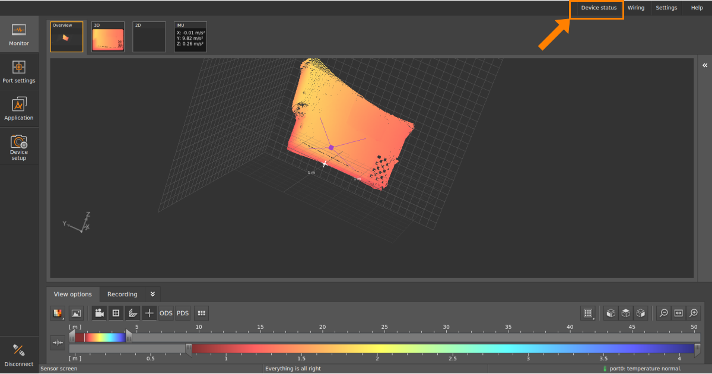
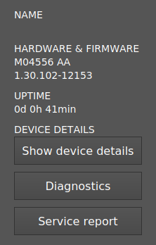
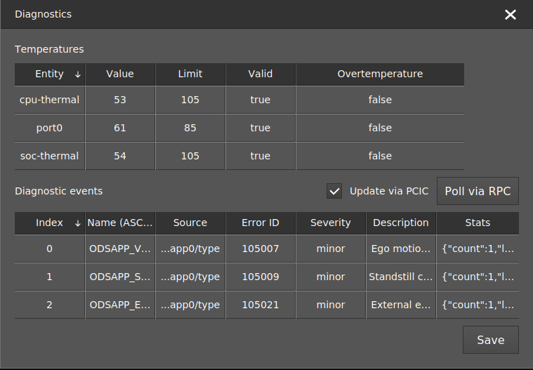

Device and diagnostic data
The O3C provides device information and diagnostic data through the ifmVisionAssistant. Use this information to verify the device state, identify active faults, investigate intermittent problems, and provide useful details when contacting ifm support.
Open device status
The Device status menu is located in the upper-right corner of the
ifmVisionAssistant.

The menu provides an overview of the connected O3C, including device information and access to diagnostics and the service report.

Read diagnostics
Select Diagnostics under Device status to view the diagnostic data. The
diagnostic information can include operating values such as temperatures,
application states, and reported errors.
Diagnostics are grouped into two categories:
Active errors: Faults detected during the latest diagnostic collection that are still active or require attention.
Dormant errors: Faults that occurred previously but are not active during the latest diagnostic collection.
Use the active and dormant filters to focus on the current device state or to investigate faults that occurred earlier.
It is strongly recommended to monitor the diagnosis information, if the system shows unexpected behavior, for example after connecting new hardware or running new an application.

Diagnostic workflow
When the O3C behaves unexpectedly:
Open
Device statusand review the active diagnostics.Note the diagnostic identifier, message, and affected component.
Check the device, port, or application configuration related to the message.
Verify whether the issue remains after correcting the underlying cause.
Review dormant diagnostics if the issue is intermittent or has already cleared.
Note
Diagnostic messages describe the state observed during a diagnostic collection. A dormant error is not necessarily a current fault, while an empty active-error list does not prove that an intermittent issue never occurred.
For detailed diagnostic descriptions and programmatic retrieval, see the diagnostic retrieval documentation.
Download a service report
The service report is a ZIP archive containing information useful for troubleshooting, including the device configuration, JSON schema, diagnostic messages, and additional internal logs.
To download it from the ifmVisionAssistant:
Open
Device statusin the upper-right corner.Select Service Report.
Choose a destination and save the ZIP archive.
Share the complete, unmodified archive with ifm support when requested. The report contain device configuration and diagnostic information, so handle it according to your organization’s information-security requirements.
For alternative download methods, see the service report documentation.